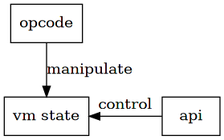
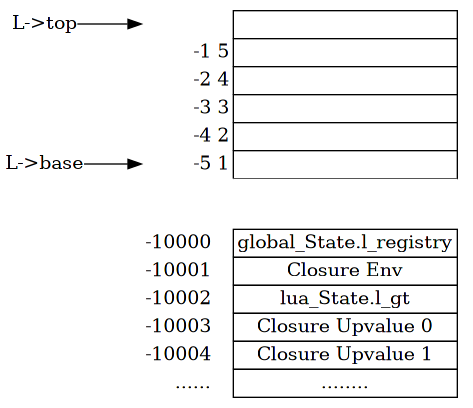
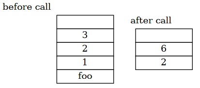

c api
Lua 的一个杰出的特性是，非常易于与 C 程序集成。
一个原因是 Lua 本身是用 C 语言实现的， 另一个原因则是 Lua 内部在 vm 层面设计提供了相应的 api。
1 design
从之前的视角来看，代码编译为 Proto，vm 开启线程，封装为 Closure 并按指令执行。
从另一个角度来看 Lua 代码的运行过程。
如果反过来看，vm 本身是静态不动的，程序的运行由输入的 Proto 而驱动。 之所以产生这样的视角，是因为 vm 必须有指令输入，告诉其应该执行什么， 否则 vm 本身也只是空转而已。
api 层提供的功能就是如此，控制 vm 应该如何执行。
如此来看，Lua 代码和 api 都是在操作 lua_State ，vm 的运行时状态。
只不过一个是编译为 opcode 由 vm 主动执行，一个是通过 c 函数接口来直接控制。

值得注意的时，api 不仅提供与语言外部使用，也在内部发挥着重要作用。
api 在外部使用，可以将 Lua 作为 C lib 来使用； 同时 api 在内部，实现了诸多 Lua 语言标准库的功能。
2 stack
说到 vm 运行时状态，最重要的部分就是栈。
实际上，几乎全部 api 都是对栈的操作。
107: /* 108: ** state manipulation 109: */ 110: LUA_API lua_State *(lua_newstate) (lua_Alloc f, void *ud); 111: LUA_API void (lua_close) (lua_State *L); 112: LUA_API lua_State *(lua_newthread) (lua_State *L); 113: 114: LUA_API lua_CFunction (lua_atpanic) (lua_State *L, lua_CFunction panicf); 115: 116: 117: /* 118: ** basic stack manipulation 119: */ 120: LUA_API int (lua_gettop) (lua_State *L); 121: LUA_API void (lua_settop) (lua_State *L, int idx); 122: LUA_API void (lua_pushvalue) (lua_State *L, int idx); 123: LUA_API void (lua_remove) (lua_State *L, int idx); 124: LUA_API void (lua_insert) (lua_State *L, int idx); 125: LUA_API void (lua_replace) (lua_State *L, int idx); 126: LUA_API int (lua_checkstack) (lua_State *L, int sz); 127: 128: LUA_API void (lua_xmove) (lua_State *from, lua_State *to, int n); 129: 130: 131: /* 132: ** access functions (stack -> C) 133: */ 134: 135: LUA_API int (lua_isnumber) (lua_State *L, int idx); 136: LUA_API int (lua_isstring) (lua_State *L, int idx); 137: LUA_API int (lua_iscfunction) (lua_State *L, int idx); 138: LUA_API int (lua_isuserdata) (lua_State *L, int idx); 139: LUA_API int (lua_type) (lua_State *L, int idx); 140: LUA_API const char *(lua_typename) (lua_State *L, int tp); 141: 142: LUA_API int (lua_equal) (lua_State *L, int idx1, int idx2); 143: LUA_API int (lua_rawequal) (lua_State *L, int idx1, int idx2); 144: LUA_API int (lua_lessthan) (lua_State *L, int idx1, int idx2); 145: 146: LUA_API lua_Number (lua_tonumber) (lua_State *L, int idx); 147: LUA_API lua_Integer (lua_tointeger) (lua_State *L, int idx); 148: LUA_API int (lua_toboolean) (lua_State *L, int idx); 149: LUA_API const char *(lua_tolstring) (lua_State *L, int idx, size_t *len); 150: LUA_API size_t (lua_objlen) (lua_State *L, int idx); 151: LUA_API lua_CFunction (lua_tocfunction) (lua_State *L, int idx); 152: LUA_API void *(lua_touserdata) (lua_State *L, int idx); 153: LUA_API lua_State *(lua_tothread) (lua_State *L, int idx); 154: LUA_API const void *(lua_topointer) (lua_State *L, int idx); 155: 156: 157: /* 158: ** push functions (C -> stack) 159: */ 160: LUA_API void (lua_pushnil) (lua_State *L); 161: LUA_API void (lua_pushnumber) (lua_State *L, lua_Number n); 162: LUA_API void (lua_pushinteger) (lua_State *L, lua_Integer n); 163: LUA_API void (lua_pushlstring) (lua_State *L, const char *s, size_t l); 164: LUA_API void (lua_pushstring) (lua_State *L, const char *s); 165: LUA_API const char *(lua_pushvfstring) (lua_State *L, const char *fmt, 166: va_list argp); 167: LUA_API const char *(lua_pushfstring) (lua_State *L, const char *fmt, ...); 168: LUA_API void (lua_pushcclosure) (lua_State *L, lua_CFunction fn, int n); 169: LUA_API void (lua_pushboolean) (lua_State *L, int b); 170: LUA_API void (lua_pushlightuserdata) (lua_State *L, void *p); 171: LUA_API int (lua_pushthread) (lua_State *L); 172: 173: 174: /* 175: ** get functions (Lua -> stack) 176: */ 177: LUA_API void (lua_gettable) (lua_State *L, int idx); 178: LUA_API void (lua_getfield) (lua_State *L, int idx, const char *k); 179: LUA_API void (lua_rawget) (lua_State *L, int idx); 180: LUA_API void (lua_rawgeti) (lua_State *L, int idx, int n); 181: LUA_API void (lua_createtable) (lua_State *L, int narr, int nrec); 182: LUA_API void *(lua_newuserdata) (lua_State *L, size_t sz); 183: LUA_API int (lua_getmetatable) (lua_State *L, int objindex); 184: LUA_API void (lua_getfenv) (lua_State *L, int idx); 185: 186: 187: /* 188: ** set functions (stack -> Lua) 189: */ 190: LUA_API void (lua_settable) (lua_State *L, int idx); 191: LUA_API void (lua_setfield) (lua_State *L, int idx, const char *k); 192: LUA_API void (lua_rawset) (lua_State *L, int idx); 193: LUA_API void (lua_rawseti) (lua_State *L, int idx, int n); 194: LUA_API int (lua_setmetatable) (lua_State *L, int objindex); 195: LUA_API int (lua_setfenv) (lua_State *L, int idx); 196: 197: 198: /* 199: ** `load' and `call' functions (load and run Lua code) 200: */ 201: LUA_API void (lua_call) (lua_State *L, int nargs, int nresults); 202: LUA_API int (lua_pcall) (lua_State *L, int nargs, int nresults, int errfunc); 203: LUA_API int (lua_cpcall) (lua_State *L, lua_CFunction func, void *ud); 204: LUA_API int (lua_load) (lua_State *L, lua_Reader reader, void *dt, 205: const char *chunkname); 206: 207: LUA_API int (lua_dump) (lua_State *L, lua_Writer writer, void *data); 208: 209: 210: /* 211: ** coroutine functions 212: */ 213: LUA_API int (lua_yield) (lua_State *L, int nresults); 214: LUA_API int (lua_resume) (lua_State *L, int narg); 215: LUA_API int (lua_status) (lua_State *L);
在官方文档1中，有对所有 api 功能的绝佳描述。
结合之前 opcode 的实现过程以及一些基本的栈操作理解，相应的 api 实现并不难理解。
其中值得注意的是栈的索引。
在对栈进行操作之前，必须先索引到其中的元素。
api 内部使用一种自定义的映射关系，将整数映射到元素的栈位置。
49: static TValue *index2adr (lua_State *L, int idx) { 50: if (idx > 0) { 51: TValue *o = L->base + (idx - 1); 52: api_check(L, idx <= L->ci->top - L->base); 53: if (o >= L->top) return cast(TValue *, luaO_nilobject); 54: else return o; 55: } 56: else if (idx > LUA_REGISTRYINDEX) { 57: api_check(L, idx != 0 && -idx <= L->top - L->base); 58: return L->top + idx; 59: } 60: else switch (idx) { /* pseudo-indices */ 61: case LUA_REGISTRYINDEX: return registry(L); 62: case LUA_ENVIRONINDEX: { 63: Closure *func = curr_func(L); 64: sethvalue(L, &L->env, func->c.env); 65: return &L->env; 66: } 67: case LUA_GLOBALSINDEX: return gt(L); 68: default: { 69: Closure *func = curr_func(L); 70: idx = LUA_GLOBALSINDEX - idx; 71: return (idx <= func->c.nupvalues) 72: ? &func->c.upvalue[idx-1] 73: : cast(TValue *, luaO_nilobject); 74: } 75: } 76: }

其中 L->base 和 L->top 标识了栈底和栈顶。
正整数索引从 1 开始，索引 1 指向 L->base ，递增向上。
负整数索引从 -1 开始，索引 L->top 之下的元素，递减向下。
0 不作为索引来使用。
在上面的规则之外，api 内部使用几个特别定义的索引值，
33: /* 34: ** pseudo-indices 35: */ 36: #define LUA_REGISTRYINDEX (-10000) 37: #define LUA_ENVIRONINDEX (-10001) 38: #define LUA_GLOBALSINDEX (-10002) 39: #define lua_upvalueindex(i) (LUA_GLOBALSINDEX-(i))
LUA_REGISTRYINDEX索引全局状态的l_registryLUA_ENVIRONINDEX索引当前 closure 的环境LUA_GLOBALSINDEX索引当前lua_State的全局表- 更小的负数，依次索引当前 closure 的 upvalue
3 c closure
在 vm 章节提到过，closure 有两种类型，CClosure 和 LClosure。
LClosure 即从 Lua 代码编译得到的函数，而 CClosure 是通过 C api 实现的函数。
因为 CClosure 要和 Lua 交互，所以要遵循一定的约定2。
首先，CClosure 在 C 语言中需要定义为 lua_CFunction 类型，
52: typedef int (*lua_CFunction) (lua_State *L);
其中，在调用时，从 base 到 top 都是 CClosure 的参数，
最终，将返回值按顺序压栈，并返回参数个数。
这个传参，调用，返回值的约定和 vm 内部解析 LClosure 是一样的。
官方文档2提供了一段示例代码，
#include <stdio.h> #include <lua.h> #include <lualib.h> #include <lauxlib.h> static int foo (lua_State *L) { int n = lua_gettop(L); /* number of arguments */ lua_Number sum = 0; int i; for (i = 1; i <= n; i++) { if (!lua_isnumber(L, i)) { lua_pushstring(L, "incorrect argument"); lua_error(L); } sum += lua_tonumber(L, i); } lua_pushnumber(L, sum/n); /* first result */ lua_pushnumber(L, sum); /* second result */ return 2; /* number of results */ } int main(int argc, char* argv[]) { char* file = NULL; file = argv[1]; lua_State* L = luaL_newstate(); luaL_openlibs(L); lua_pushcfunction(L, foo); lua_setfield(L, LUA_GLOBALSINDEX, "foo"); luaL_dofile(L, file); return 0; }
avg, sum = foo(1, 2, 3)
print(avg, sum)
通过
$ make -s example
可以编译运行上述示例。
其中先注册了 CClosure 为全局变量 foo，再在 lua 代码中调用， 打印出所有参数的平均值和总和。
其中栈的变化情况如下，

4 practice
在 example/ 目录下，实现了两种 foo 的实现方式。
cclosure 小节在 C 语言层面，定义 foo 并注册到全局表中，而在 Lua 层面调用；
example/lclosure.c example/lclosure.lua 将 foo 在 Lua 代码中定义为全局变量，
而在 C 语言层面调用。
读者可通过
$ make -s example
来对比这两种协同方式。
| 章节涉及文件 | 建议了解程度 |
|---|---|
| lua.h | ★ ★ ★ ★ ★ |
| lapi.h | ★ ☆ ☆ ☆ ☆ |
| lapi.c | ★ ★ ★ ★ ★ |